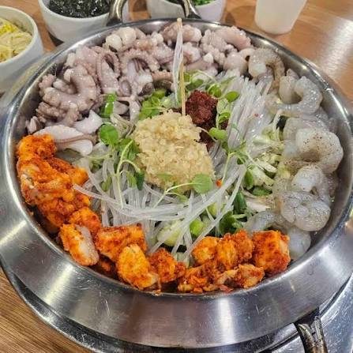
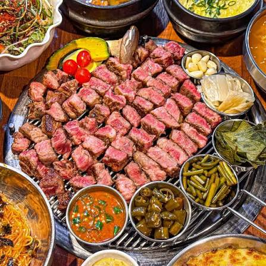
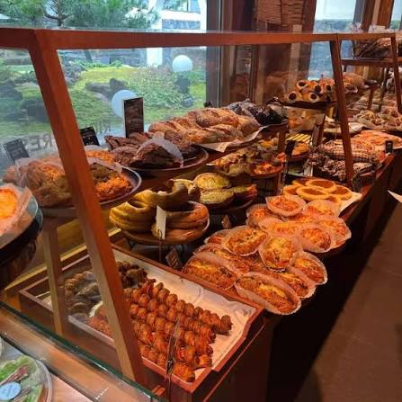

맛집
- 이낙에산다 부산역직영점부산역 근처에서 낙지·곱창·새우가 들어간 낙곱새를 먹을 수 있는 식당. 직원이 조리를 도와준다는 후기가 있음.
- 맛고 연상시청본점이베리코 늑간살과 꽃목살을 판매하는 식당. 직원이 고기를 직접 구워주는 서비스가 특징이고, 저녁 식사나 모임 장소로 추천.
- 토북베이커리 카페식사보다는 빵과 공간 경험을 중심으로 사람들이 방문하는 대형 카페. 한옥 건축, 정원, 다양한 베이커리 종류가 특징이다.


